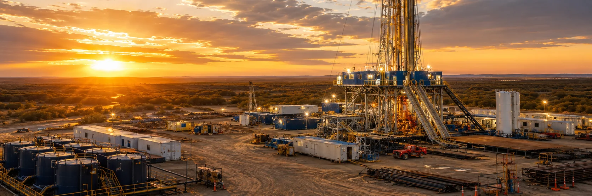

Invest in American energy. Build your family's future.
The U.S. EB-5 Immigrant Investor Program grants a Green Card to investors who fund a U.S. business that creates American jobs.
Meridian's 12-Well Development is a designated Rural Project. This means priority processing for your I-526E petition, a lower investment threshold, and an investment backed by real, working oil wells in the Wilcox trend.
12 Wells. 4 Sub-Ventures.
We designed this program so EB-5 investors and private oil investors can both take part — and no investor depends on another. The 12 wells are split into four sub-ventures of 3 wells each.
3 Wells
$3.78M Private + $2.0M EB-5
3 Wells
$3.78M Private + $2.0M EB-5
3 Wells
$3.78M Private + $2.0M EB-5
3 Wells
$3.78M Private + $2.0M EB-5
Shirley Wells EB-5 Fund I
EB-5 Investment Fund
Shirley Wells Upstream Development, LLC
Job-creating company · Field team
Shirley Wells OC, LLC
Drills & operates
Regional Center: Mid-America Rural Development
Sponsor & Manager: Meridian Oil & Gas
We found oil — 2 million barrels estimated.
Our wells target stacked oil sands that nearby wells have produced from for decades. Our own Wells 1, 2 & 3 were drilled into these sands, and their cores and logs confirm oil.
Every well we drill must clear our strict 100,000-barrel hurdle before we commit capital.
Across the target sands (Wilcox, Wild Sands, Baker), internally estimated.
Stacked pay zones mean more than one chance at oil in every wellbore.
| Sand | History: Nearby Wells | Estimated Left to Produce | Key Evidence |
|---|---|---|---|
| G-1 | 205,525 BO | 156,078 BO | Attic oil updip of a well that produced 199,509 BO |
| F-2 | 55,559 BO | 146,190 BO | Offset flowed 38 BOPD before shut-in damage |
| E-2 | — | 52,500 BO | 7 ft of pay found in 1957, never produced |
| C-2 | 93,271 BO | 50,850 BO | No water contact mapped in the sand |
| Total | 354,355 BO | 405,618 BO | Average recovery 669 BO per acre-foot |
Volumes are internally estimated recoverable reserves prepared by the geological advisor; they are not independently certified and are not a guarantee of production.

Shirley Wells Venture 1
A three-well drilling program in LaSalle Parish, Louisiana, with initial wells focused on the Wilcox and a deeper third-well objective.
Reported field milestones
Wells 1 and 2 were drilled to approximately 4,500 feet. Site infrastructure preparations included tanks, equipment and related utility work. Their completion and commercial production had not been confirmed as of the last reported field update.
The third well was reported at approximately 4,000 feet of drilled depth on November 7, with drilling continuing toward a proposed 7,500-foot target. Progress reported on that date should not be treated as today's live depth.
Read dated field report ↗Shirley Wells Venture 2
A separate four-well development program planned in Section 30 of LaSalle Parish.
Engineering-led well selection
The development plan allows the well mix and drilling depth to be determined by geological assessment, well results and practical field constraints. Deeper intervals described in project materials include the Wild Sands and Baker Sand.
As of the most recent dated materials available for this version, the four Venture 2 wells were planned. We are not identifying any as drilled, completed or producing without subsequent verification.
Venture 1 and Venture 2 are separate legal programs. Describing them together as Louisiana operations does not combine their well interests, ownership or investor rights.
Oswego Horizontal Wells Project.
Our next growth step: two horizontal wells in Kingfisher County, Oklahoma, targeting the Oswego formation, a proven oil-producing limestone.
- Horizontal Laterals: Each well turns sideways and runs 4,000 – 6,000 ft through the oil layer.
- Ready-to-Drill Lease: Permitted disposal well and power already on site.
- Estimated Reserves: 500,000 – 1.2 million barrels estimated for the 2-well project.*
This page is for information only. It is not an offer to sell or a solicitation to buy any security; any offer is made only through official offering documents, to eligible investors. Oil drilling carries risk: a well may not find commercial oil, production and prices can be lower than expected, and investors can lose money. Reserve figures are internal estimates, not certified reserves.
EB-5 eligibility, investment amounts and Green Card approval are decided under U.S. law by U.S. immigration authorities. Investments involve risk, including loss of capital. Immigration outcomes are not guaranteed. * Tax treatment depends on each investor's situation. Consult your own immigration, tax and legal advisors.
* The $800,000 rural minimum applies to filings before January 1, 2027, when U.S. law provides for an inflation adjustment. Rural status is confirmed in the USCIS filing. Green Card approval is decided by U.S. immigration authorities and is not guaranteed.